2 Análisis exploratorio de datos (EDA)
2.1 Análisis exploratorio de exam_score (Target)
trainset %>%
summarise(
n = length(exam_score),
media = mean(exam_score),
ds = sd(exam_score),
mediana = median(exam_score),
minimo = min(exam_score),
maximo = max(exam_score),
Q1 = quantile(exam_score, 0.25),
Q3 = quantile(exam_score, 0.75),
IQR = IQR(exam_score)
)## n media ds mediana minimo maximo Q1 Q3 IQR
## 1 630000 62.50667 18.91688 62.6 19.599 100 48.8 76.3 27.5La variable exam_score se analizó a partir de 630.000 estudiantes, donde cada fila representa un estudiante. El puntaje promedio es de 62,51 puntos, con una desviación estándar de 18,92 puntos.
El 50% de los estudiantes obtiene un puntaje menor o igual a 62,60 puntos, prácticamente igual a la media, lo que indica una distribución simétrica. El IQR es de 27,5 puntos (entre Q1 = 48,8 y Q3 = 76,3). El puntaje mínimo es 19,60 y el máximo 100.
- Histograma de densidad de la variable:
trainset %>%
ggplot(aes(x = exam_score)) +
geom_histogram(aes(y = after_stat(density)),
binwidth = 5,
fill = "#c5b0ff",
color = "white",
alpha = 0.6) +
geom_density(color = "darkblue", linewidth = 1.2) +
coord_cartesian(xlim = c(0, 100), expand = FALSE) +
labs(title = "Distribución de la calificación del examen",
x = "Calificación del examen",
y = "Densidad") +
theme_bw()
La mayor parte de los puntajes se concentra entre 50 y 75 puntos y la forma es aproximadamente simétrica. Al final se ve un aumento en 100 porque es el puntaje máximo posible: 15.458 estudiantes (2,45%) lo alcanzan.
- Diagrama de cajas y bigotes:
trainset %>%
ggplot(aes(x = "", y = exam_score)) +
geom_boxplot(fill = "#c5b0ff", color = "darkblue",
outlier.color = "#2f0be0") +
stat_summary(fun = mean, geom = "point", shape = 20,
size = 3, color = "black") +
labs(title = "Diagrama de cajas y bigotes de la calificación del examen",
x = "",
y = "Calificación del examen") +
theme_bw()
El boxplot confirma lo visto en el histograma: la mediana (62,6) está prácticamente centrada entre Q1 (48,8) y Q3 (76,3), la media (punto negro) coincide con ella y no hay valores atípicos.
2.2 Análisis de las variables independientes (características)
- Inicialmente, analizaremos las variables numéricas.
resumen_numericas <- trainset %>%
select(where(is.numeric), -exam_score, -id) %>%
pivot_longer(
cols = everything(),
names_to = "variable",
values_to = "valor"
) %>%
group_by(variable) %>%
summarise(
n = sum(!is.na(valor)),
media = round(mean(valor, na.rm = TRUE),3),
ds = round(sd(valor, na.rm = TRUE),3),
mediana = median(valor, na.rm = TRUE),
minimo = min(valor, na.rm = TRUE),
maximo = max(valor, na.rm = TRUE),
Q1 = quantile(valor, 0.25, na.rm = TRUE),
Q3 = quantile(valor, 0.75, na.rm = TRUE),
IQR = IQR(valor, na.rm = TRUE),
.groups = "drop"
)
resumen_numericas## # A tibble: 4 × 10
## variable n media ds mediana minimo maximo Q1 Q3 IQR
## <chr> <int> <dbl> <dbl> <dbl> <dbl> <dbl> <dbl> <dbl> <dbl>
## 1 age 630000 20.5 2.26 21 17 24 19 23 4
## 2 class_attendance 630000 72.0 17.4 72.6 40.6 99.4 57 87.2 30.2
## 3 sleep_hours 630000 7.07 1.74 7.1 4.1 9.9 5.6 8.6 3
## 4 study_hours 630000 4.00 2.36 4 0.08 7.91 1.97 6.05 4.08library(patchwork)
# Boxplot de age
p1 <- trainset %>%
ggplot(aes(x = "", y = age)) +
geom_boxplot(fill = "#c5b0ff", alpha = 0.7) +
labs(title = "Edad de los estudiantes", y = "Edad", x = "") +
theme_bw() +
theme(plot.title = element_text(size = 10, face = "bold"))
# Boxplot de study_hours
p2 <- trainset %>%
ggplot(aes(x = "", y = study_hours)) +
geom_boxplot(fill = "#c5b0ff", alpha = 0.7) +
labs(title = "Horas de estudio", y = "Horas", x = "") +
theme_bw() +
theme(plot.title = element_text(size = 10, face = "bold"))
# Boxplot de class_attendance
p3 <- trainset %>%
ggplot(aes(x = "", y = class_attendance)) +
geom_boxplot(fill = "#c5b0ff", alpha = 0.7) +
labs(title = "Porcentaje de asistencia", y = "%", x = "") +
theme_bw() +
theme(plot.title = element_text(size = 10, face = "bold"))
# Boxplot de sleep_hours
p4 <- trainset %>%
ggplot(aes(x = "", y = sleep_hours)) +
geom_boxplot(fill = "#c5b0ff", alpha = 0.7) +
labs(title = "Horas de sueño", y = "Horas", x = "") +
theme_bw() +
theme(plot.title = element_text(size = 10, face = "bold"))
# Cuadrícula 2x2
(p1 + p2) / (p3 + p4)
Los boxplots muestran que las cuatro variables numéricas independientes tienen distribuciones bastante simétricas y sin valores atípicos.
age: la mayoría de los estudiantes tiene entre 19 y 23 años; el 50% tiene una edad menor o igual a 21 años.study_hours: las horas de estudio van desde casi 0 hasta cerca de 8 horas; el 50% dedica 4 horas o menos al estudio.class_attendance: la asistencia se concentra entre 57% y 87%; el 50% de los estudiantes tiene una asistencia menor o igual a 72,6%.sleep_hours: la mayoría de los estudiantes duerme entre 5,6 y 8,6 horas; el 50% duerme 7,1 horas o menos.
En las cuatro variables la media y la mediana son prácticamente iguales, lo que coincide con lo observado en la tabla resumen.
# Histograma de age
trainset %>%
ggplot(aes(x = age)) +
geom_histogram(fill = "#c5b0ff", alpha = 0.7, bins = 30, color = "white") +
labs(title = "Edad de los estudiantes", x = "Edad", y = "Frecuencia") +
theme_bw() +
theme(plot.title = element_text(size = 10, face = "bold"))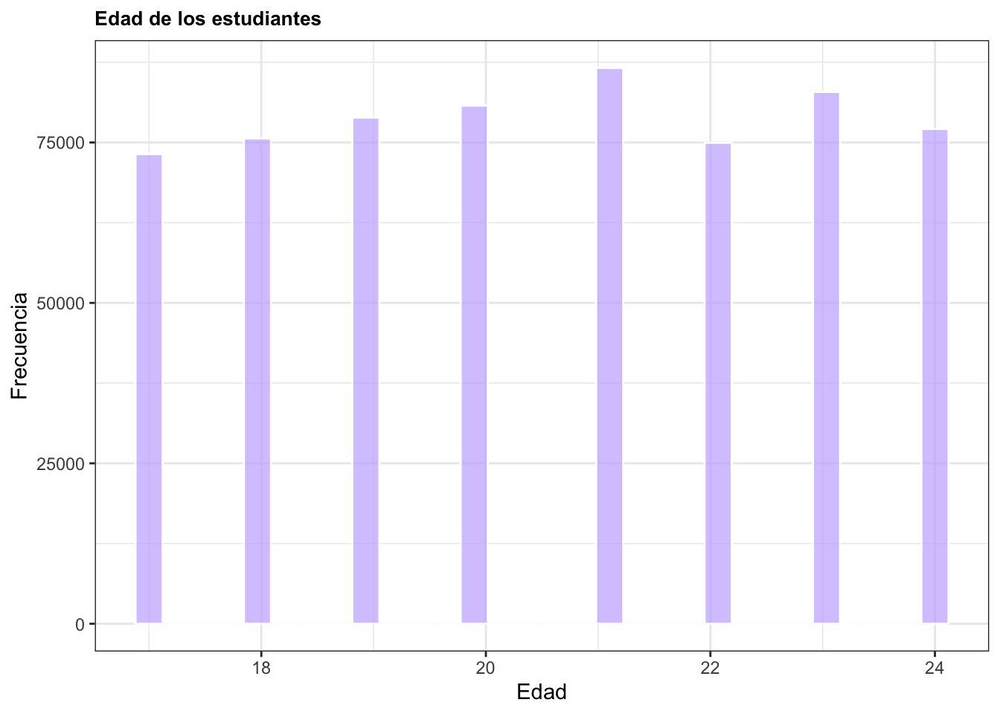
Las barras tienen una altura muy similar entre los 17 y 24 años: la edad es una variable discreta y prácticamente uniforme, sin una edad que predomine sobre las demás.
# Histograma de study_hours
trainset %>%
ggplot(aes(x = study_hours)) +
geom_histogram(fill = "#c5b0ff", alpha = 0.7, bins = 50, color = "white") +
labs(title = "Horas de estudio", x = "Horas", y = "Frecuencia") +
theme_bw() +
theme(plot.title = element_text(size = 10, face = "bold"))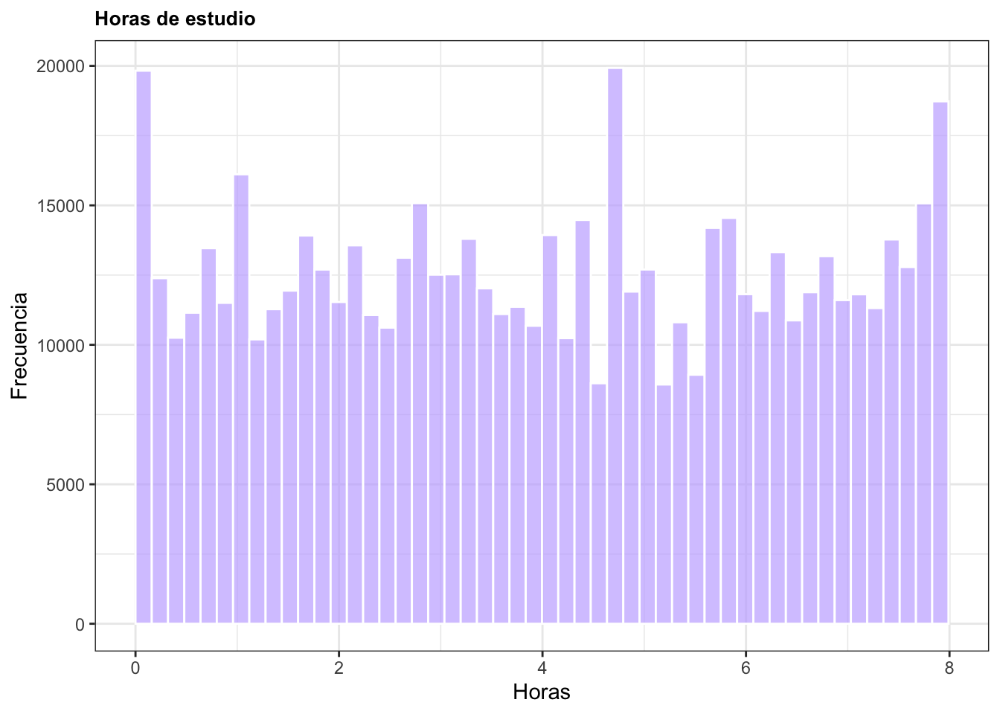
La distribución es bastante uniforme en todo el rango (0 a 8 horas), con algunas barras puntuales de mayor frecuencia. Los estudiantes se reparten de forma pareja entre quienes estudian pocas y muchas horas.
# Histograma de class_attendance
trainset %>%
ggplot(aes(x = class_attendance)) +
geom_histogram(fill = "#c5b0ff", alpha = 0.7, bins = 50, color = "white") +
labs(title = "Porcentaje de asistencia", x = "%", y = "Frecuencia") +
theme_bw() +
theme(plot.title = element_text(size = 10, face = "bold"))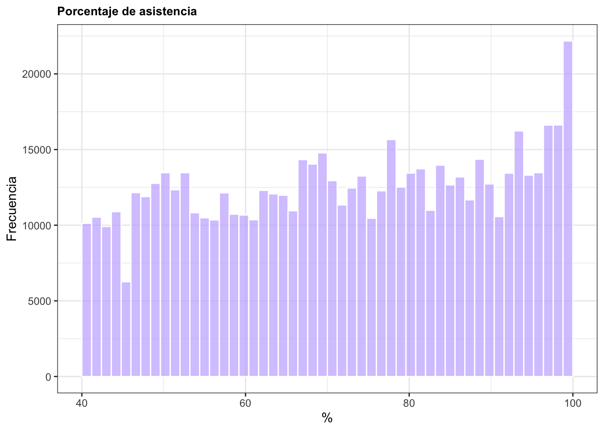
La distribución es relativamente uniforme entre 40% y 90%, con un aumento cerca del 100%: hay un grupo considerable de estudiantes con asistencia casi perfecta.
# Histograma de sleep_hours
trainset %>%
ggplot(aes(x = sleep_hours)) +
geom_histogram(fill = "#c5b0ff", alpha = 0.7, bins = 50, color = "white") +
labs(title = "Horas de sueño", x = "Horas", y = "Frecuencia") +
theme_bw() +
theme(plot.title = element_text(size = 10, face = "bold"))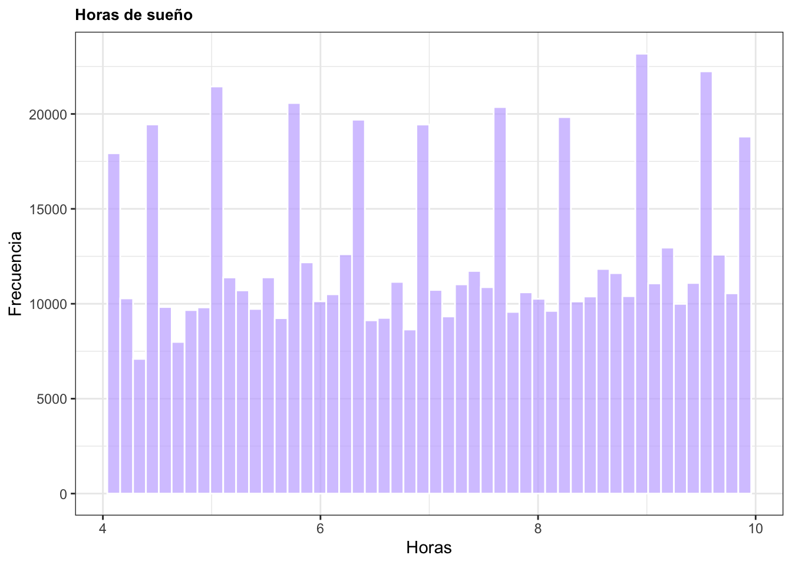
La distribución es bastante homogénea entre 4 y 10 horas, sin una concentración marcada en ningún valor.
- A continuación, trabajaremos con las variables categóricas.
tabla_study_method <- trainset %>%
count(study_method, name = "Frecuencia") %>%
mutate(
Porcentaje = round(Frecuencia / sum(Frecuencia) * 100, 2),
Variable = "study_method",
Categoria = as.character(study_method)
) %>%
select(Variable, Categoria, Frecuencia, Porcentaje)
tabla_study_method## Variable Categoria Frecuencia Porcentaje
## 1 study_method coaching 131697 20.90
## 2 study_method group study 123009 19.53
## 3 study_method mixed 123086 19.54
## 4 study_method online videos 121077 19.22
## 5 study_method self-study 131131 20.81tabla_study_method <- trainset %>%
count(study_method, name = "Frecuencia") %>%
mutate(
Porcentaje = round(Frecuencia / sum(Frecuencia) * 100, 1),
Etiqueta = paste0(Frecuencia, " (", Porcentaje, "%)")
)
ggplot(tabla_study_method, aes(x = reorder(study_method, -Frecuencia), y = Frecuencia)) +
geom_col(fill = "#c5b0ff", width = 0.4) +
geom_text(aes(label = Etiqueta), vjust = -0.5, size = 3.5) +
facet_wrap(~ "Distribución de la variable study_method") +
scale_y_continuous(expand = expansion(mult = c(0, 0.15))) +
labs(x = "Método de estudio", y = "Frecuencia (Porcentaje)") +
theme_bw(base_size = 12) +
theme(
plot.title = element_blank(),
strip.background = element_rect(fill = "gray80", color = NA),
strip.text = element_text(face = "bold"),
panel.grid.major.x = element_blank()
)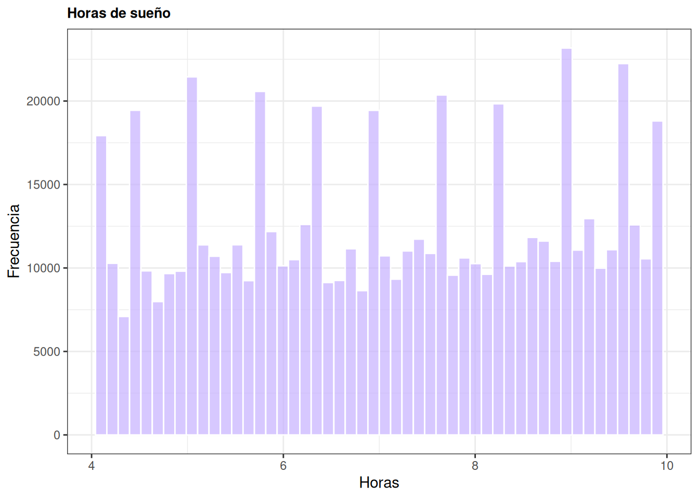
Las cinco categorías de study_method están equilibradas: coaching (20,90%) y self-study (20,81%) son las más frecuentes, seguidas de mixed (19,54%), group study (19,53%) y online videos (19,22%). Ninguna categoría domina.
tabla_gender <- trainset %>%
count(gender, name = "Frecuencia") %>%
mutate(
Porcentaje = round(Frecuencia / sum(Frecuencia) * 100, 2),
Variable = "gender",
Categoria = as.character(gender)
) %>%
select(Variable, Categoria, Frecuencia, Porcentaje)
tabla_gender## Variable Categoria Frecuencia Porcentaje
## 1 gender female 208310 33.07
## 2 gender male 210593 33.43
## 3 gender other 211097 33.51tabla_gender <- trainset %>%
count(gender, name = "Frecuencia") %>%
mutate(
Porcentaje = round(Frecuencia / sum(Frecuencia) * 100, 1),
Etiqueta = paste0(Frecuencia, " (", Porcentaje, "%)")
)
ggplot(tabla_gender, aes(x = reorder(gender, -Frecuencia), y = Frecuencia)) +
geom_col(fill = "#c5b0ff", width = 0.3) +
geom_text(aes(label = Etiqueta), vjust = -0.5, size = 3) +
facet_wrap(~ "Distribución de la variable gender") +
scale_y_continuous(expand = expansion(mult = c(0, 0.15))) +
labs(x = "Género", y = "Frecuencia (Porcentaje)") +
theme_bw(base_size = 12) +
theme(
plot.title = element_blank(),
strip.background = element_rect(fill = "gray80", color = NA),
strip.text = element_text(face = "bold"),
panel.grid.major.x = element_blank()
)
La variable gender está repartida de forma muy pareja: other (33,51%), male (33,43%) y female (33,07%).
tabla_internet_access <- trainset %>%
count(internet_access, name = "Frecuencia") %>%
mutate(
Porcentaje = round(Frecuencia / sum(Frecuencia) * 100, 2),
Variable = "internet_access",
Categoria = as.character(internet_access)
) %>%
select(Variable, Categoria, Frecuencia, Porcentaje)
tabla_internet_access## Variable Categoria Frecuencia Porcentaje
## 1 internet_access no 50577 8.03
## 2 internet_access yes 579423 91.97tabla_internet_access <- trainset %>%
count(internet_access, name = "Frecuencia") %>%
mutate(
Porcentaje = round(Frecuencia / sum(Frecuencia) * 100, 1),
Etiqueta = paste0(Frecuencia, " (", Porcentaje, "%)")
)
ggplot(tabla_internet_access, aes(x = reorder(internet_access, -Frecuencia), y = Frecuencia)) +
geom_col(fill = "#c5b0ff", width = 0.3) +
geom_text(aes(label = Etiqueta), vjust = -0.5, size = 3.5) +
facet_wrap(~ "Distribución de la variable internet_access") +
scale_y_continuous(expand = expansion(mult = c(0, 0.6))) +
labs(x = "Acceso a internet", y = "Frecuencia (Porcentaje)") +
theme_bw(base_size = 12) +
theme(
plot.title = element_blank(),
strip.background = element_rect(fill = "gray80", color = NA),
strip.text = element_text(face = "bold"),
panel.grid.major.x = element_blank()
)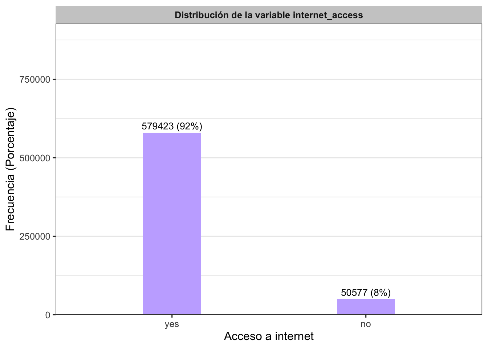
Aquí sí hay un desbalance marcado: el 91,97% de los estudiantes tiene acceso a internet (yes) y solo el 8,03% no lo tiene (no). Aun así, el grupo sin acceso tiene 50.577 estudiantes, suficientes para compararlo con el otro.
tabla_course <- trainset %>%
count(course, name = "Frecuencia") %>%
mutate(
Porcentaje = round(Frecuencia / sum(Frecuencia) * 100, 2),
Variable = "course",
Categoria = as.character(course)
) %>%
select(Variable, Categoria, Frecuencia, Porcentaje)
tabla_course## Variable Categoria Frecuencia Porcentaje
## 1 course b.com 110932 17.61
## 2 course b.sc 111554 17.71
## 3 course b.tech 131236 20.83
## 4 course ba 61989 9.84
## 5 course bba 75644 12.01
## 6 course bca 88721 14.08
## 7 course diploma 49924 7.92tabla_course <- trainset %>%
count(course, name = "Frecuencia") %>%
mutate(
Porcentaje = round(Frecuencia / sum(Frecuencia) * 100, 1),
Etiqueta = paste0(Frecuencia, " (", Porcentaje, "%)")
)
ggplot(tabla_course, aes(x = reorder(course, -Frecuencia), y = Frecuencia)) +
geom_col(fill = "#c5b0ff", width = 0.45) +
geom_text(aes(label = Etiqueta), vjust = -0.5, size = 2.8) +
facet_wrap(~ "Distribución de la variable course") +
scale_y_continuous(expand = expansion(mult = c(0, 0.15))) +
labs(x = "Curso", y = "Frecuencia (Porcentaje)") +
theme_bw(base_size = 12) +
theme(
plot.title = element_blank(),
strip.background = element_rect(fill = "gray80", color = NA),
strip.text = element_text(face = "bold"),
panel.grid.major.x = element_blank()
)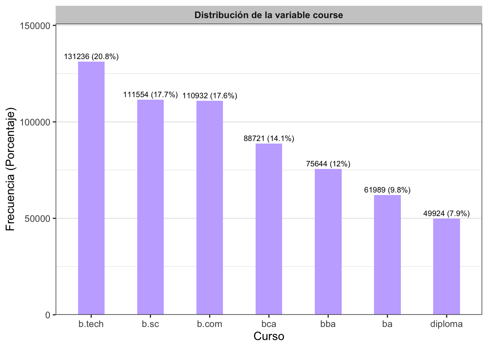
b.tech concentra la mayor proporción de estudiantes (20,83%), seguida por b.sc (17,71%) y b.com (17,61%); entre las tres suman cerca del 56%. Las menos representadas son diploma (7,92%) y ba (9,84%). El desbalance es moderado: las siete categorías van del 8% al 21%.
tabla_sleep_quality <- trainset %>%
count(sleep_quality, name = "Frecuencia") %>%
mutate(
Porcentaje = round(Frecuencia / sum(Frecuencia) * 100, 2),
Variable = "sleep_quality",
Categoria = as.character(sleep_quality)
) %>%
select(Variable, Categoria, Frecuencia, Porcentaje)
tabla_sleep_quality## Variable Categoria Frecuencia Porcentaje
## 1 sleep_quality average 203236 32.26
## 2 sleep_quality good 213089 33.82
## 3 sleep_quality poor 213675 33.92tabla_sleep_quality <- trainset %>%
count(sleep_quality, name = "Frecuencia") %>%
mutate(
Porcentaje = round(Frecuencia / sum(Frecuencia) * 100, 1),
Etiqueta = paste0(Frecuencia, " (", Porcentaje, "%)")
)
ggplot(tabla_sleep_quality, aes(x = reorder(sleep_quality, -Frecuencia), y = Frecuencia)) +
geom_col(fill = "#c5b0ff", width = 0.3) +
geom_text(aes(label = Etiqueta), vjust = -0.5, size = 3.5) +
facet_wrap(~ "Distribución de la variable sleep_quality") +
scale_y_continuous(expand = expansion(mult = c(0, 0.15))) +
labs(x = "Calidad del sueño", y = "Frecuencia (Porcentaje)") +
theme_bw(base_size = 12) +
theme(
plot.title = element_blank(),
strip.background = element_rect(fill = "gray80", color = NA),
strip.text = element_text(face = "bold"),
panel.grid.major.x = element_blank()
)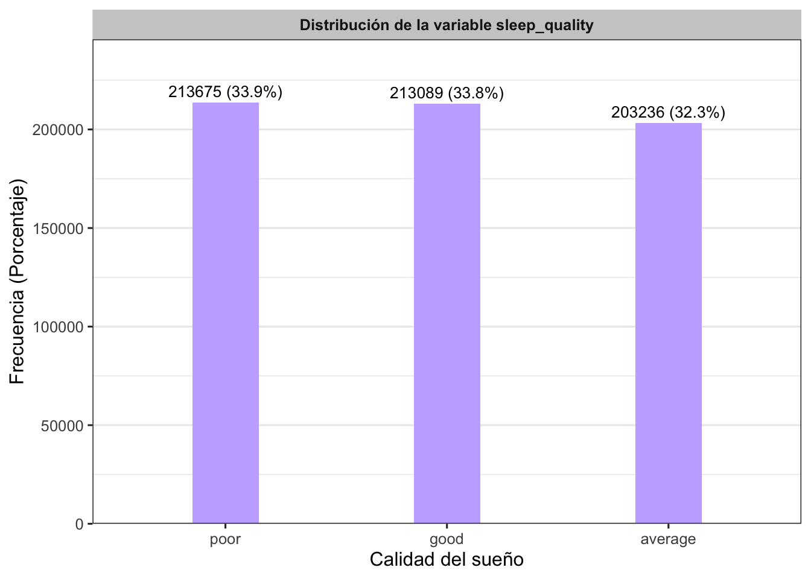
Las tres categorías de sleep_quality tienen proporciones casi iguales: poor (33,92%), good (33,82%) y average (32,26%).
tabla_facility_rating <- trainset %>%
count(facility_rating, name = "Frecuencia") %>%
mutate(
Porcentaje = round(Frecuencia / sum(Frecuencia) * 100, 2),
Variable = "facility_rating",
Categoria = as.character(facility_rating)
) %>%
select(Variable, Categoria, Frecuencia, Porcentaje)
tabla_facility_rating## Variable Categoria Frecuencia Porcentaje
## 1 facility_rating high 203540 32.31
## 2 facility_rating low 212378 33.71
## 3 facility_rating medium 214082 33.98tabla_facility_rating <- trainset %>%
count(facility_rating, name = "Frecuencia") %>%
mutate(
Porcentaje = round(Frecuencia / sum(Frecuencia) * 100, 1),
Etiqueta = paste0(Frecuencia, " (", Porcentaje, "%)")
)
ggplot(tabla_facility_rating, aes(x = reorder(facility_rating, -Frecuencia), y = Frecuencia)) +
geom_col(fill = "#c5b0ff", width = 0.3) +
geom_text(aes(label = Etiqueta), vjust = -0.5, size = 3.5) +
facet_wrap(~ "Distribución de la variable facility_rating") +
scale_y_continuous(expand = expansion(mult = c(0, 0.15))) +
labs(x = "Calificación de instalaciones", y = "Frecuencia (Porcentaje)") +
theme_bw(base_size = 12) +
theme(
plot.title = element_blank(),
strip.background = element_rect(fill = "gray80", color = NA),
strip.text = element_text(face = "bold"),
panel.grid.major.x = element_blank()
)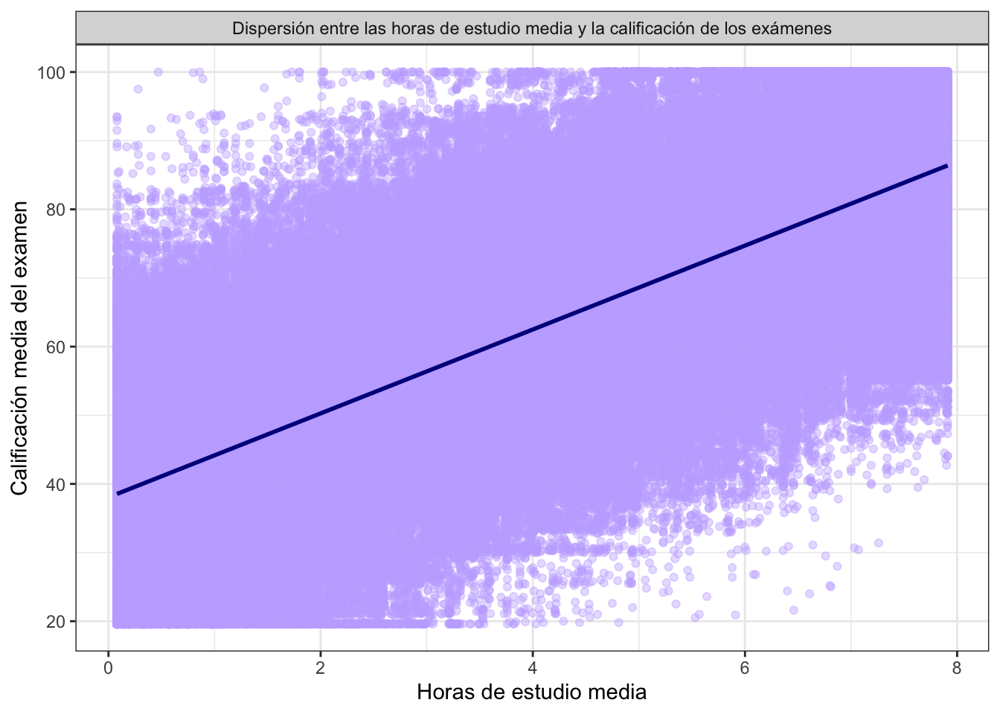
Igual que sleep_quality, las tres categorías de facility_rating están equilibradas: medium (33,98%), low (33,71%) y high (32,31%).
tabla_exam_difficulty <- trainset %>%
count(exam_difficulty, name = "Frecuencia") %>%
mutate(
Porcentaje = round(Frecuencia / sum(Frecuencia) * 100, 2),
Variable = "exam_difficulty",
Categoria = as.character(exam_difficulty)
) %>%
select(Variable, Categoria, Frecuencia, Porcentaje)
tabla_exam_difficulty## Variable Categoria Frecuencia Porcentaje
## 1 exam_difficulty easy 176540 28.02
## 2 exam_difficulty hard 99478 15.79
## 3 exam_difficulty moderate 353982 56.19tabla_exam_difficulty <- trainset %>%
count(exam_difficulty, name = "Frecuencia") %>%
mutate(
Porcentaje = round(Frecuencia / sum(Frecuencia) * 100, 1),
Etiqueta = paste0(Frecuencia, " (", Porcentaje, "%)")
)
ggplot(tabla_exam_difficulty, aes(x = reorder(exam_difficulty, -Frecuencia), y = Frecuencia)) +
geom_col(fill = "#c5b0ff", width = 0.3) +
geom_text(aes(label = Etiqueta), vjust = -0.5, size = 3.5) +
facet_wrap(~ "Distribución de la variable exam_difficulty") +
scale_y_continuous(expand = expansion(mult = c(0, 0.15))) +
labs(x = "Dificultad del examen", y = "Frecuencia (Porcentaje)") +
theme_bw(base_size = 12) +
theme(
plot.title = element_blank(),
strip.background = element_rect(fill = "gray80", color = NA),
strip.text = element_text(face = "bold"),
panel.grid.major.x = element_blank()
)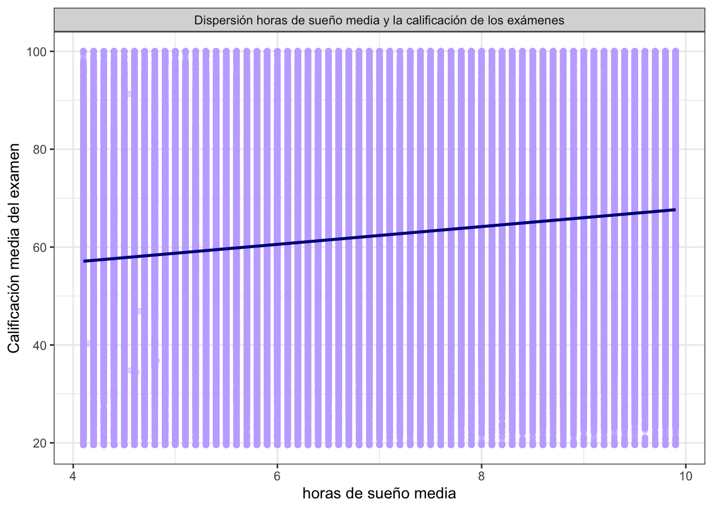
Es la variable categórica con mayor desbalance después de internet_access: moderate concentra el 56,19% de las observaciones, easy el 28,02% y hard el 15,79%.
2.3 Análisis exploratorio bivariado
- A continuación, analizaremos la relación entre la variable objetivo
exam_scorey las variables numéricas independientes.
age vs exam_score
trainset %>%
ggplot(aes(x = age, y = exam_score)) +
geom_point(alpha = 0.4, color = "#c5b0ff") +
geom_smooth(method = "lm", formula = y ~ x, se = FALSE, color = "red") +
labs(x = "Edad", y = "Calificación del examen") +
theme_bw() +
facet_grid(. ~ "Dispersión entre la edad y la calificación del examen")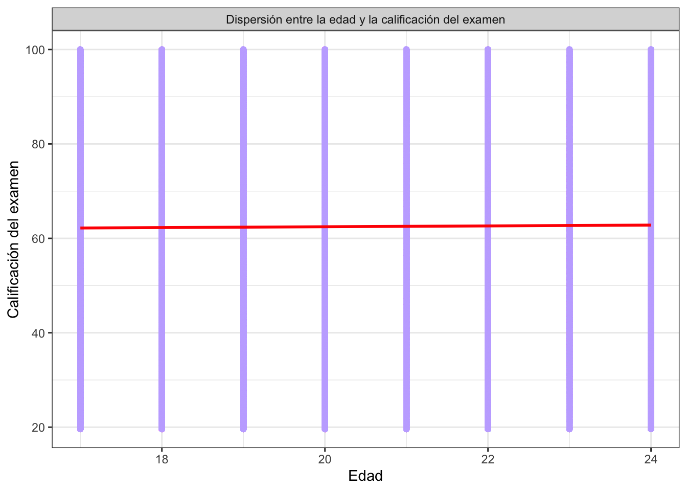
La calificación se distribuye igual en todas las edades (17 a 24 años), con puntos en todo el rango de 20 a 100. La línea de tendencia es casi plana: no se ve una relación lineal entre la edad y la nota.
study_hours vs exam_score
trainset %>%
ggplot(aes(x = study_hours, y = exam_score)) +
geom_point(alpha = 0.4, color = "#c5b0ff") +
geom_smooth(method = "lm", formula = y ~ x, se = FALSE, color = "red") +
labs(x = "Horas de estudio", y = "Calificación del examen") +
theme_bw() +
facet_grid(. ~ "Dispersión entre las horas de estudio y la calificación del examen")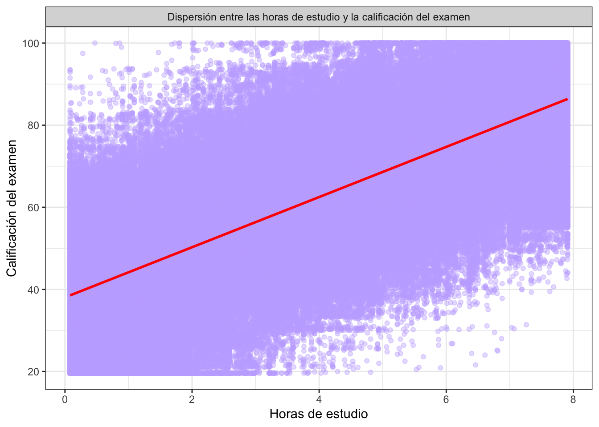
Hay una relación positiva clara: a más horas de estudio, mayor calificación. La nube de puntos sube junto con la línea de tendencia y es la relación más marcada de las cuatro.
class_attendance vs exam_score
trainset %>%
ggplot(aes(x = class_attendance, y = exam_score)) +
geom_point(alpha = 0.4, color = "#c5b0ff") +
geom_smooth(method = "lm", formula = y ~ x, se = FALSE, color = "red") +
labs(x = "Asistencia a clases (%)", y = "Calificación del examen") +
theme_bw() +
facet_grid(. ~ "Dispersión entre la asistencia a clases y la calificación del examen")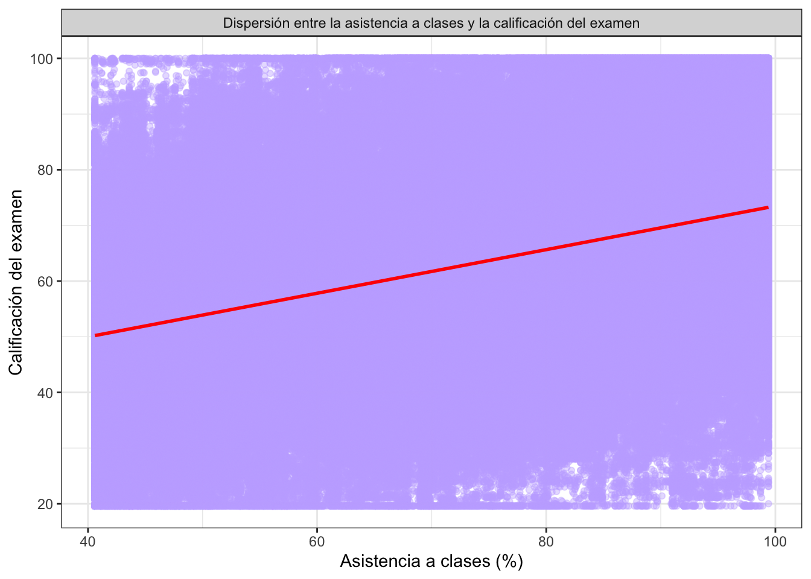
La línea de tendencia es positiva: los estudiantes con mayor asistencia tienden a sacar mejor nota. Sin embargo, la nube de puntos cubre todo el rango de calificaciones para cualquier nivel de asistencia, así que la relación es más débil que con study_hours.
sleep_hours vs exam_score
trainset %>%
ggplot(aes(x = sleep_hours, y = exam_score)) +
geom_point(alpha = 0.4, color = "#c5b0ff") +
geom_smooth(method = "lm", formula = y ~ x, se = FALSE, color = "red") +
labs(x = "Horas de sueño", y = "Calificación del examen") +
theme_bw() +
facet_grid(. ~ "Dispersión entre las horas de sueño y la calificación del examen")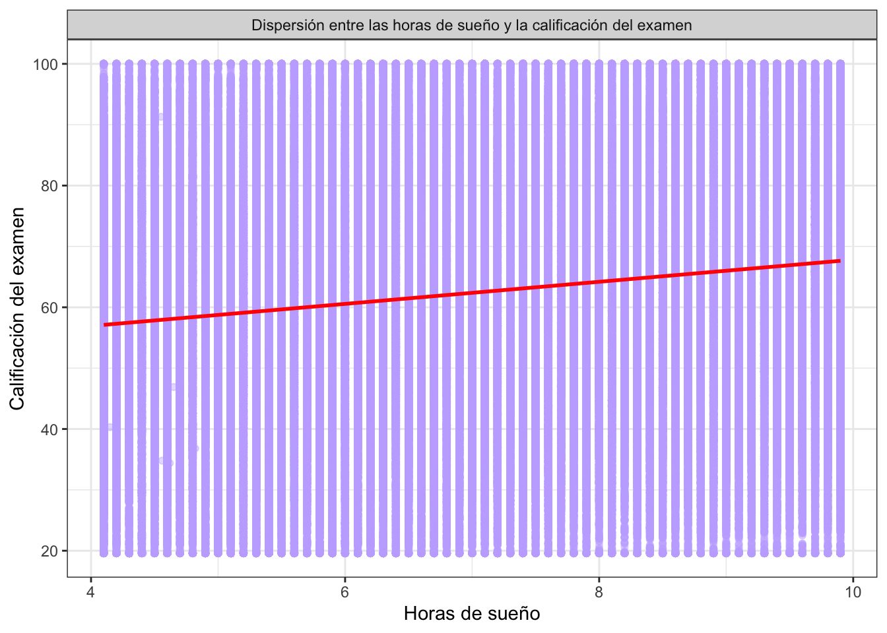
La línea de tendencia es positiva, pero los puntos cubren todo el rango de calificaciones para cualquier cantidad de horas de sueño. La relación con la nota es débil.
- Ahora analizaremos la relación entre
exam_scorey las variables categóricas independientes.
gender vs exam_score
trainset %>%
ggplot(aes(x = gender, y = exam_score)) +
geom_boxplot(fill = "#c5b0ff", alpha = 0.7) +
stat_summary(fun = mean, geom = "point", shape = 20, size = 3, color = "black") +
labs(title = "Calificación del examen según gender",
x = "Género", y = "Calificación del examen") +
theme_bw()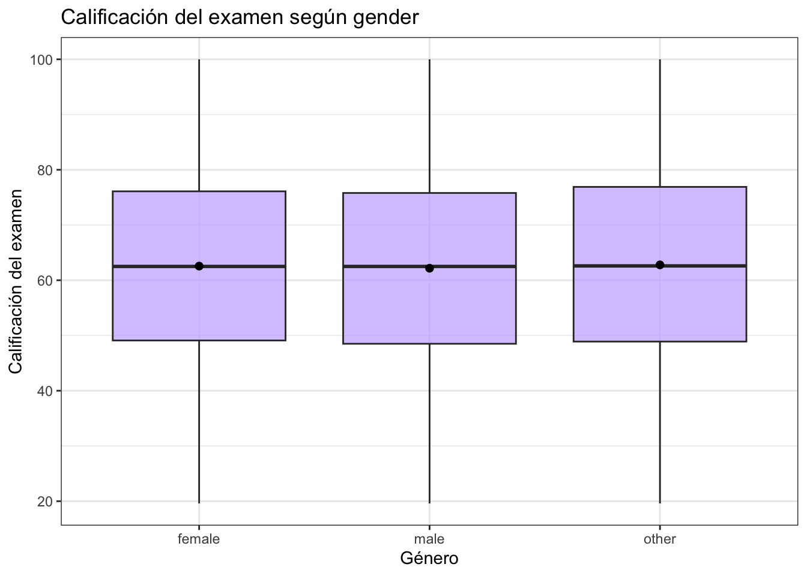
trainset %>%
group_by(gender) %>%
summarise(n = length(exam_score),
media = mean(exam_score),
ds = sd(exam_score),
mediana = median(exam_score),
minimo = min(exam_score),
maximo = max(exam_score),
Q1 = quantile(exam_score, 0.25),
Q3 = quantile(exam_score, 0.75),
IQR = IQR(exam_score))## # A tibble: 3 × 10
## gender n media ds mediana minimo maximo Q1 Q3 IQR
## <chr> <int> <dbl> <dbl> <dbl> <dbl> <dbl> <dbl> <dbl> <dbl>
## 1 female 208310 62.6 18.9 62.5 19.6 100 49.1 76.1 27
## 2 male 210593 62.2 18.8 62.5 19.6 100 48.5 75.8 27.3
## 3 other 211097 62.8 19.1 62.6 19.6 100 48.9 76.9 28Las tres cajas se superponen casi por completo. Las medias van de 62,2 a 62,8 y las medianas de 62,5 a 62,6: el género no marca diferencias en el desempeño.
internet_access vs exam_score
trainset %>%
ggplot(aes(x = internet_access, y = exam_score)) +
geom_boxplot(fill = "#c5b0ff", alpha = 0.7) +
stat_summary(fun = mean, geom = "point", shape = 20, size = 3, color = "black") +
labs(title = "Calificación del examen según internet_access",
x = "Acceso a internet", y = "Calificación del examen") +
theme_bw()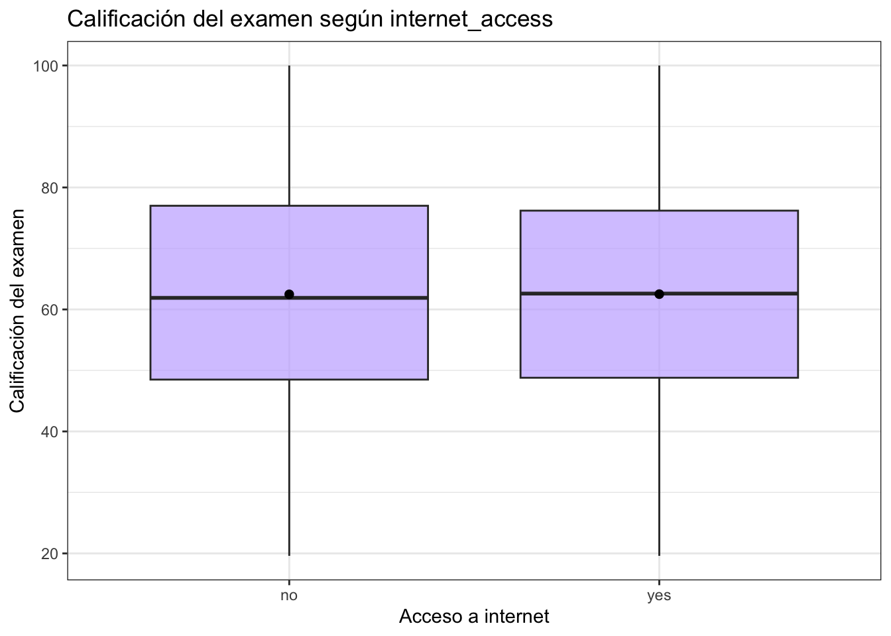
trainset %>%
group_by(internet_access) %>%
summarise(n = length(exam_score),
media = mean(exam_score),
ds = sd(exam_score),
mediana = median(exam_score),
minimo = min(exam_score),
maximo = max(exam_score),
Q1 = quantile(exam_score, 0.25),
Q3 = quantile(exam_score, 0.75),
IQR = IQR(exam_score))## # A tibble: 2 × 10
## internet_access n media ds mediana minimo maximo Q1 Q3 IQR
## <chr> <int> <dbl> <dbl> <dbl> <dbl> <dbl> <dbl> <dbl> <dbl>
## 1 no 50577 62.5 19.3 61.9 19.6 100 48.5 77 28.5
## 2 yes 579423 62.5 18.9 62.6 19.6 100 48.8 76.2 27.4La mediana es 61,9 en el grupo sin internet y 62,6 en el grupo con internet, y las medias son iguales (62,5). Las cajas se solapan casi por completo.
course vs exam_score
trainset %>%
ggplot(aes(x = course, y = exam_score)) +
geom_boxplot(fill = "#c5b0ff", alpha = 0.7) +
stat_summary(fun = mean, geom = "point", shape = 20, size = 3, color = "black") +
labs(title = "Calificación del examen según course",
x = "Curso", y = "Calificación del examen") +
theme_bw() +
theme(axis.text.x = element_text(angle = 30, hjust = 1))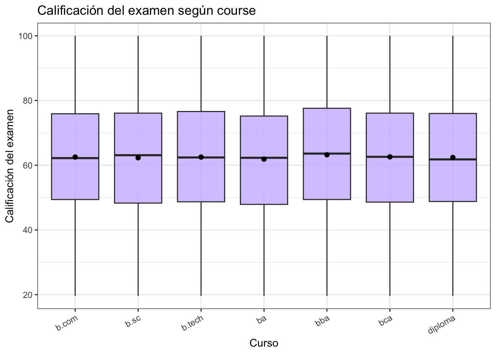
trainset %>%
group_by(course) %>%
summarise(n = length(exam_score),
media = mean(exam_score),
ds = sd(exam_score),
mediana = median(exam_score),
minimo = min(exam_score),
maximo = max(exam_score),
Q1 = quantile(exam_score, 0.25),
Q3 = quantile(exam_score, 0.75),
IQR = IQR(exam_score))## # A tibble: 7 × 10
## course n media ds mediana minimo maximo Q1 Q3 IQR
## <chr> <int> <dbl> <dbl> <dbl> <dbl> <dbl> <dbl> <dbl> <dbl>
## 1 b.com 110932 62.5 18.4 62.2 19.6 100 49.4 75.9 26.5
## 2 b.sc 111554 62.3 19.3 63.1 19.6 100 48.3 76.1 27.8
## 3 b.tech 131236 62.5 18.9 62.4 19.6 100 48.7 76.6 27.9
## 4 ba 61989 61.9 18.8 62.3 19.6 100 47.9 75.2 27.3
## 5 bba 75644 63.2 19.2 63.6 19.6 100 49.4 77.6 28.2
## 6 bca 88721 62.6 18.9 62.6 19.6 100 48.6 76.1 27.5
## 7 diploma 49924 62.4 19.1 61.8 19.6 100 48.8 76 27.2Las medianas van de 61,8 (diploma) a 63,6 (bba), un rango de 1,8 puntos entre los siete cursos. Ningún programa académico se distingue del resto.
sleep_quality vs exam_score
trainset %>%
ggplot(aes(x = sleep_quality, y = exam_score)) +
geom_boxplot(fill = "#c5b0ff", alpha = 0.7) +
stat_summary(fun = mean, geom = "point", shape = 20, size = 3, color = "black") +
labs(title = "Calificación del examen según sleep_quality",
x = "Calidad del sueño", y = "Calificación del examen") +
theme_bw()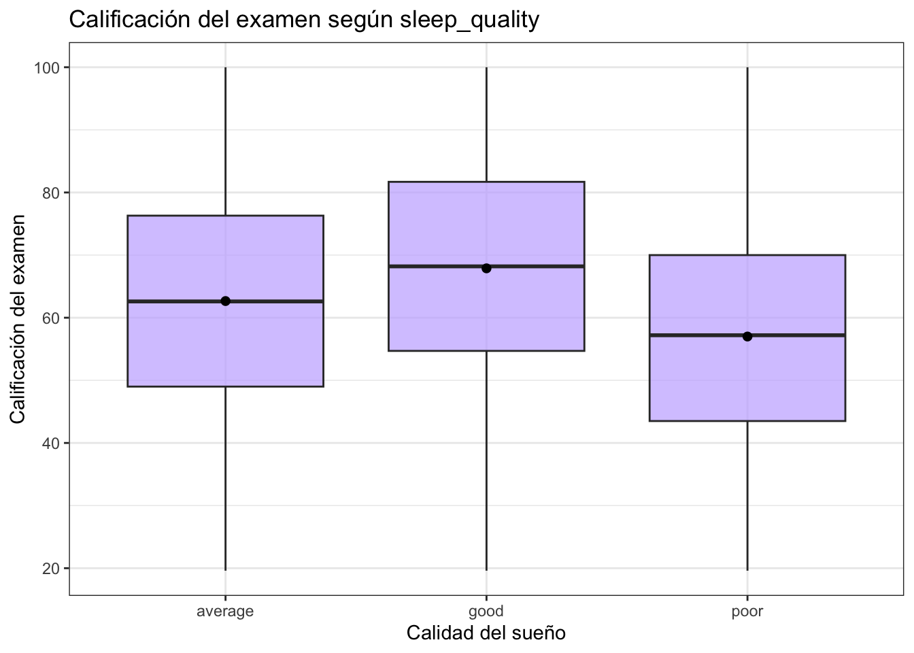
trainset %>%
group_by(sleep_quality) %>%
summarise(n = length(exam_score),
media = mean(exam_score),
ds = sd(exam_score),
mediana = median(exam_score),
minimo = min(exam_score),
maximo = max(exam_score),
Q1 = quantile(exam_score, 0.25),
Q3 = quantile(exam_score, 0.75),
IQR = IQR(exam_score))## # A tibble: 3 × 10
## sleep_quality n media ds mediana minimo maximo Q1 Q3 IQR
## <chr> <int> <dbl> <dbl> <dbl> <dbl> <dbl> <dbl> <dbl> <dbl>
## 1 average 203236 62.7 18.6 62.6 19.6 100 49 76.3 27.3
## 2 good 213089 67.9 18.1 68.2 19.6 100 54.7 81.7 27
## 3 poor 213675 57.0 18.4 57.2 19.6 100 43.5 70 26.5Aquí sí hay diferencias: la mediana es 57,2 en poor, 62,6 en average y 68,2 en good, 11 puntos entre los extremos. A mejor calidad de sueño, mejor nota.
facility_rating vs exam_score
trainset %>%
ggplot(aes(x = facility_rating, y = exam_score)) +
geom_boxplot(fill = "#c5b0ff", alpha = 0.7) +
stat_summary(fun = mean, geom = "point", shape = 20, size = 3, color = "black") +
labs(title = "Calificación del examen según facility_rating",
x = "Calificación de instalaciones", y = "Calificación del examen") +
theme_bw()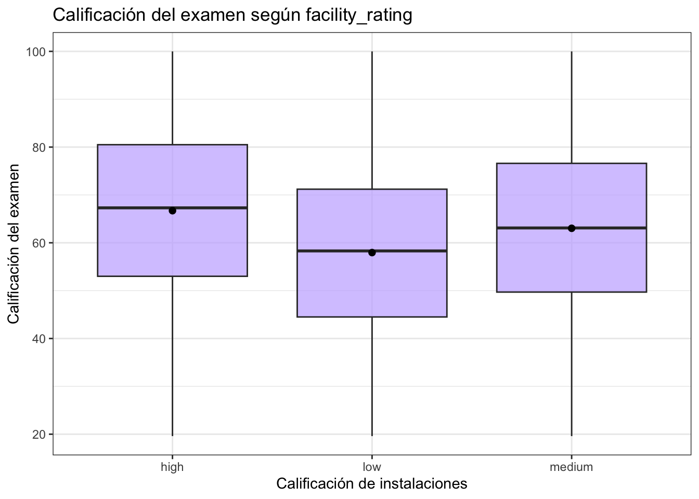
trainset %>%
group_by(facility_rating) %>%
summarise(n = length(exam_score),
media = mean(exam_score),
ds = sd(exam_score),
mediana = median(exam_score),
minimo = min(exam_score),
maximo = max(exam_score),
Q1 = quantile(exam_score, 0.25),
Q3 = quantile(exam_score, 0.75),
IQR = IQR(exam_score))## # A tibble: 3 × 10
## facility_rating n media ds mediana minimo maximo Q1 Q3 IQR
## <chr> <int> <dbl> <dbl> <dbl> <dbl> <dbl> <dbl> <dbl> <dbl>
## 1 high 203540 66.7 18.5 67.3 19.6 100 53 80.5 27.5
## 2 low 212378 58.0 18.6 58.3 19.6 100 44.5 71.2 26.7
## 3 medium 214082 63.0 18.6 63.1 19.6 100 49.7 76.6 26.9La mediana es 58,3 en low, 63,1 en medium y 67,3 en high, unos 9 puntos entre los extremos. Las cajas se desplazan hacia arriba a medida que mejora la calificación de las instalaciones.
exam_difficulty vs exam_score
trainset %>%
ggplot(aes(x = exam_difficulty, y = exam_score)) +
geom_boxplot(fill = "#c5b0ff", alpha = 0.7) +
stat_summary(fun = mean, geom = "point", shape = 20, size = 3, color = "black") +
labs(title = "Calificación del examen según exam_difficulty",
x = "Dificultad del examen", y = "Calificación del examen") +
theme_bw()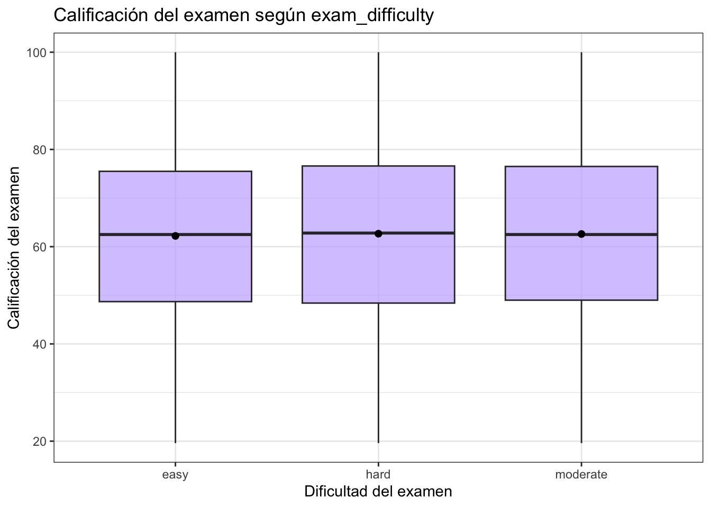
trainset %>%
group_by(exam_difficulty) %>%
summarise(n = length(exam_score),
media = mean(exam_score),
ds = sd(exam_score),
mediana = median(exam_score),
minimo = min(exam_score),
maximo = max(exam_score),
Q1 = quantile(exam_score, 0.25),
Q3 = quantile(exam_score, 0.75),
IQR = IQR(exam_score))## # A tibble: 3 × 10
## exam_difficulty n media ds mediana minimo maximo Q1 Q3 IQR
## <chr> <int> <dbl> <dbl> <dbl> <dbl> <dbl> <dbl> <dbl> <dbl>
## 1 easy 176540 62.2 18.7 62.5 19.6 100 48.7 75.5 26.8
## 2 hard 99478 62.7 19.1 62.8 19.6 100 48.4 76.6 28.2
## 3 moderate 353982 62.6 19.0 62.5 19.6 100 49 76.5 27.5Las medianas son casi iguales en las tres categorías (62,5 a 62,8) y las cajas prácticamente coinciden: la dificultad percibida del examen no genera diferencias en la nota.
study_method vs exam_score
trainset %>%
ggplot(aes(x = study_method, y = exam_score)) +
geom_boxplot(fill = "#c5b0ff", alpha = 0.7) +
stat_summary(fun = mean, geom = "point", shape = 20, size = 3, color = "black") +
labs(title = "Calificación del examen según study_method",
x = "Método de estudio", y = "Calificación del examen") +
theme_bw() +
theme(axis.text.x = element_text(angle = 30, hjust = 1))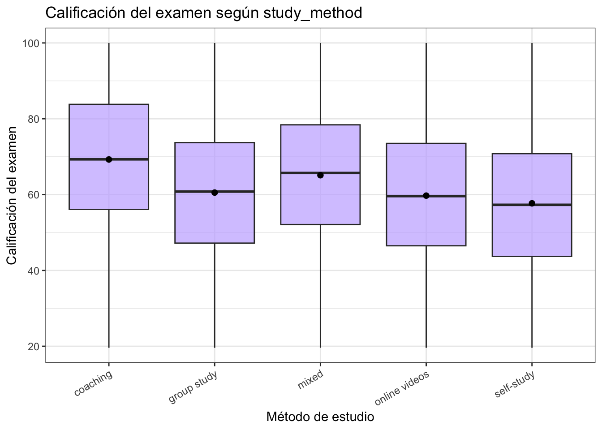
trainset %>%
group_by(study_method) %>%
summarise(n = length(exam_score),
media = mean(exam_score),
ds = sd(exam_score),
mediana = median(exam_score),
minimo = min(exam_score),
maximo = max(exam_score),
Q1 = quantile(exam_score, 0.25),
Q3 = quantile(exam_score, 0.75),
IQR = IQR(exam_score))## # A tibble: 5 × 10
## study_method n media ds mediana minimo maximo Q1 Q3 IQR
## <chr> <int> <dbl> <dbl> <dbl> <dbl> <dbl> <dbl> <dbl> <dbl>
## 1 coaching 131697 69.3 18.4 69.3 19.6 100 56.1 83.8 27.7
## 2 group study 123009 60.5 18.2 60.8 19.6 100 47.2 73.7 26.5
## 3 mixed 123086 65.1 18.2 65.7 19.6 100 52.1 78.4 26.3
## 4 online videos 121077 59.7 18.7 59.6 19.6 100 46.5 73.5 27
## 5 self-study 131131 57.7 18.6 57.3 19.6 100 43.7 70.8 27.1Es la variable con mayor diferencia entre grupos: la mediana va de 57,3 en self-study a 69,3 en coaching, 12 puntos. Coaching y mixed quedan por encima de group study, online videos y self-study.
En las siete variables la desviación estándar de exam_score es muy parecida entre grupos (entre 18,1 y 19,3 puntos), es decir, la dispersión de la nota casi no cambia de un grupo a otro.
- Por último, veamos cómo se relacionan entre sí las variables numéricas independientes.
age vs study_hours
trainset %>%
ggplot(aes(x = age, y = study_hours)) +
geom_point(alpha = 0.4, color = "#c5b0ff") +
geom_smooth(method = "lm", formula = y ~ x, se = FALSE, color = "red") +
labs(x = "Edad", y = "Horas de estudio") +
theme_bw() +
facet_grid(. ~ "Dispersión entre la edad y las horas de estudio")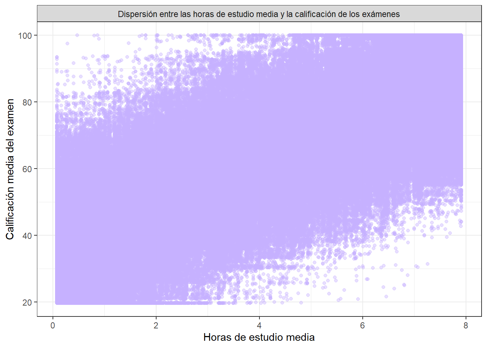
La nube de puntos cubre todo el rango de ambas variables y la línea de tendencia es plana: la edad no se relaciona con las horas de estudio.
age vs class_attendance
trainset %>%
ggplot(aes(x = age, y = class_attendance)) +
geom_point(alpha = 0.4, color = "#c5b0ff") +
geom_smooth(method = "lm", formula = y ~ x, se = FALSE, color = "red") +
labs(x = "Edad", y = "Asistencia a clases (%)") +
theme_bw() +
facet_grid(. ~ "Dispersión entre la edad y la asistencia a clases")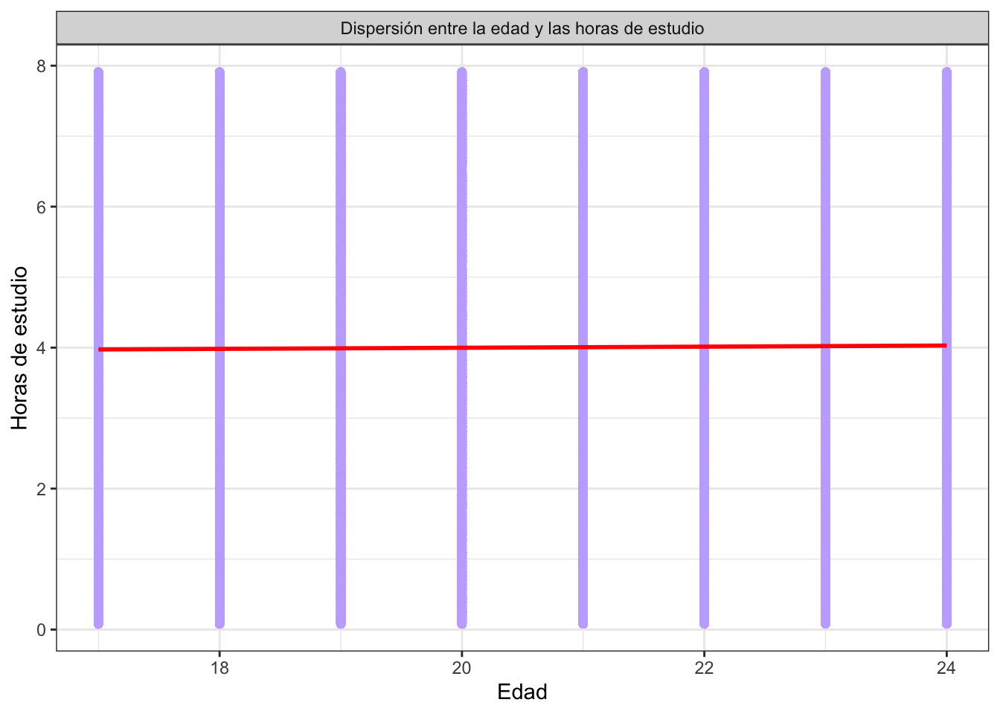
La asistencia se comporta igual entre los 17 y los 24 años; la línea de tendencia es plana.
age vs sleep_hours
trainset %>%
ggplot(aes(x = age, y = sleep_hours)) +
geom_point(alpha = 0.4, color = "#c5b0ff") +
geom_smooth(method = "lm", formula = y ~ x, se = FALSE, color = "red") +
labs(x = "Edad", y = "Horas de sueño") +
theme_bw() +
facet_grid(. ~ "Dispersión entre la edad y las horas de sueño")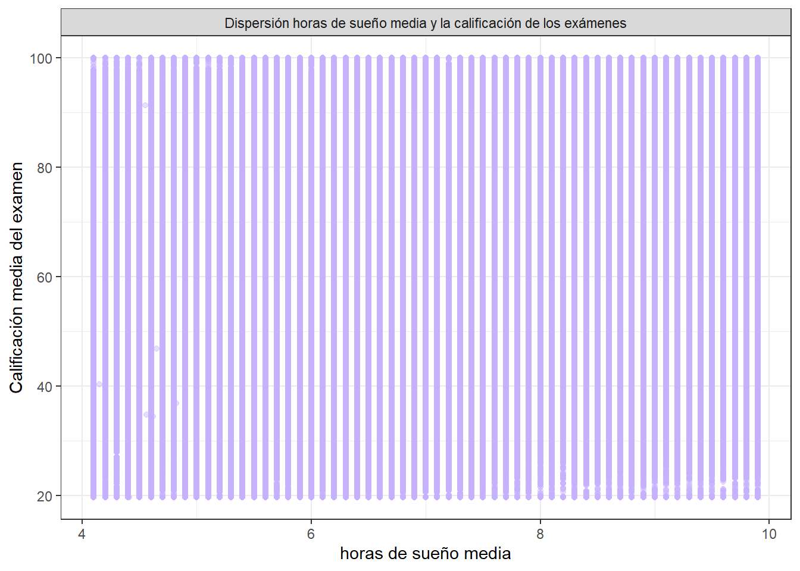
Los puntos se distribuyen de forma uniforme sin importar la edad y la línea de tendencia es plana.
study_hours vs class_attendance
trainset %>%
ggplot(aes(x = study_hours, y = class_attendance)) +
geom_point(alpha = 0.4, color = "#c5b0ff") +
geom_smooth(method = "lm", formula = y ~ x, se = FALSE, color = "red") +
labs(x = "Horas de estudio", y = "Asistencia a clases (%)") +
theme_bw() +
facet_grid(. ~ "Dispersión entre las horas de estudio y la asistencia a clases")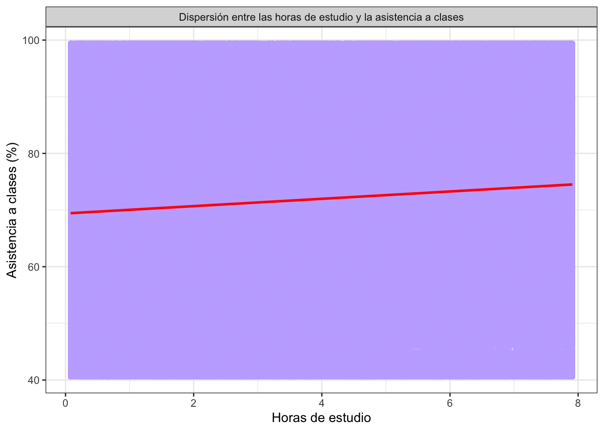
La línea de tendencia tiene una pendiente positiva muy leve, pero los puntos cubren todo el rango de ambas variables: la relación es muy débil.
study_hours vs sleep_hours
trainset %>%
ggplot(aes(x = study_hours, y = sleep_hours)) +
geom_point(alpha = 0.4, color = "#c5b0ff") +
geom_smooth(method = "lm", formula = y ~ x, se = FALSE, color = "red") +
labs(x = "Horas de estudio", y = "Horas de sueño") +
theme_bw() +
facet_grid(. ~ "Dispersión entre las horas de estudio y las horas de sueño")
La línea de tendencia es casi plana: estudiar más o menos horas no se asocia con dormir más o menos.
class_attendance vs sleep_hours
trainset %>%
ggplot(aes(x = class_attendance, y = sleep_hours)) +
geom_point(alpha = 0.4, color = "#c5b0ff") +
geom_smooth(method = "lm", formula = y ~ x, se = FALSE, color = "red") +
labs(x = "Asistencia a clases (%)", y = "Horas de sueño") +
theme_bw() +
facet_grid(. ~ "Dispersión entre la asistencia a clases y las horas de sueño")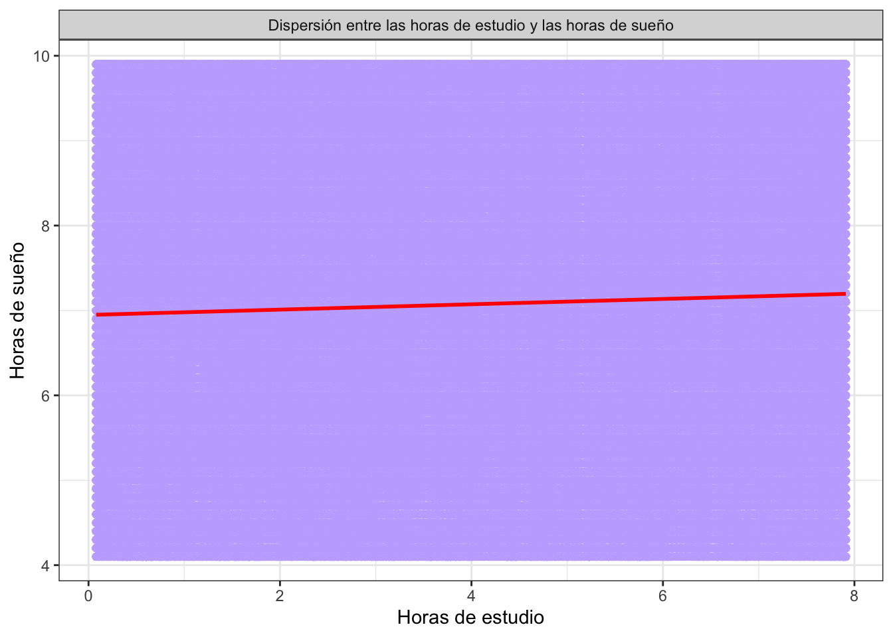
Tampoco hay relación entre la asistencia a clases y las horas de sueño: la nube de puntos es homogénea y la línea de tendencia es casi plana.
Las variables numéricas independientes prácticamente no se relacionan entre sí, así que cada una aporta información distinta sobre exam_score.